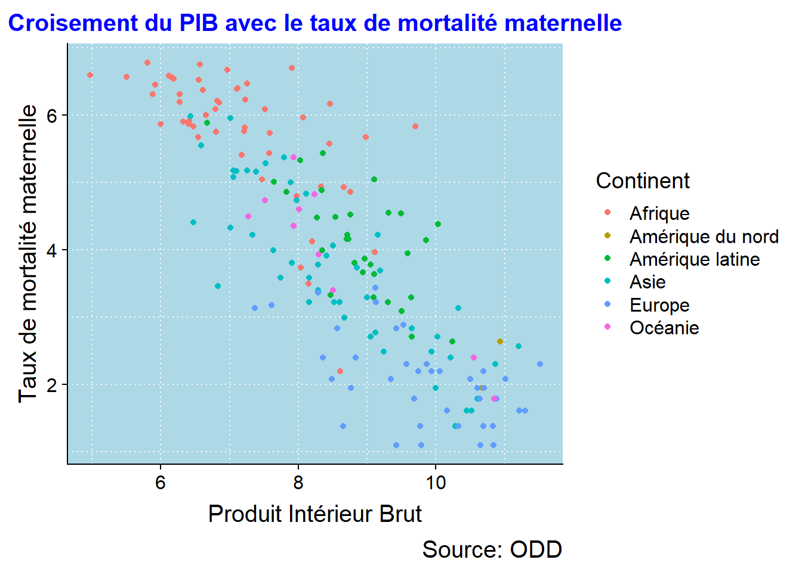
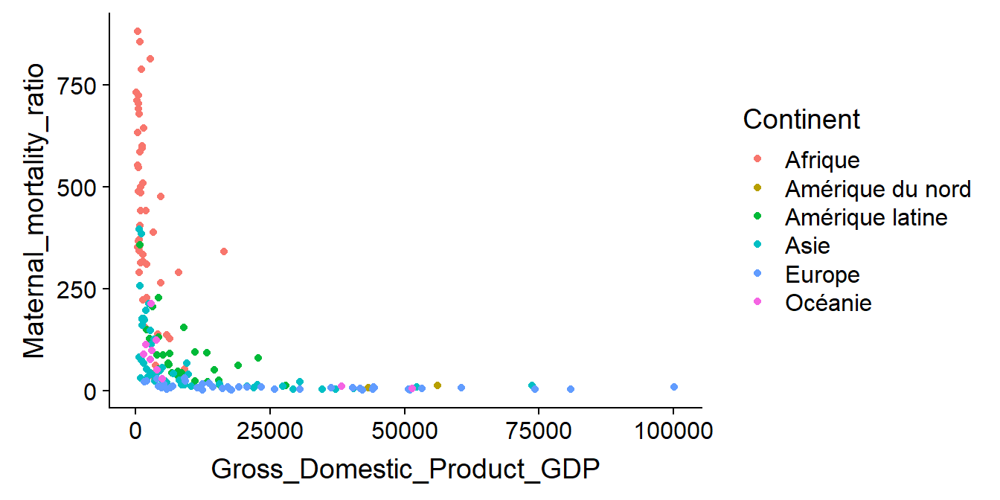
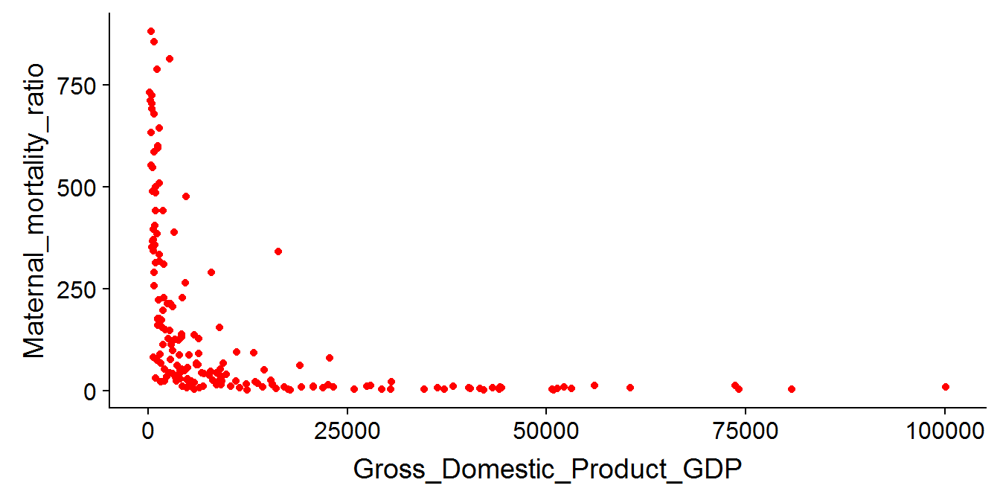
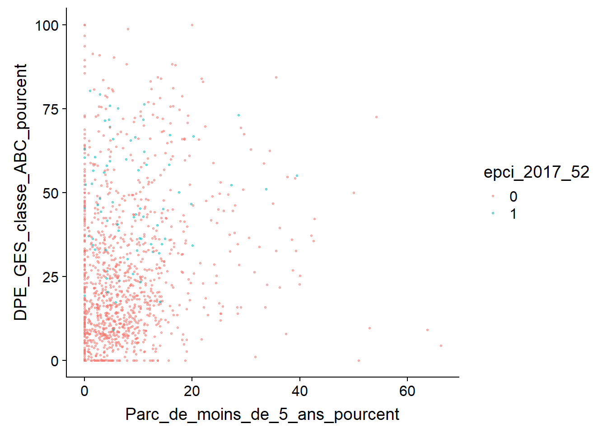
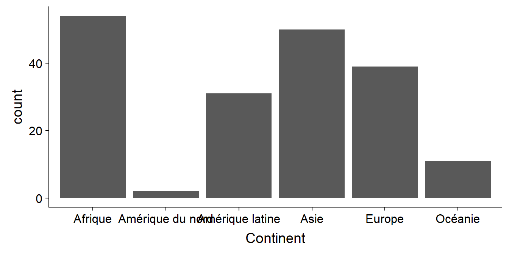
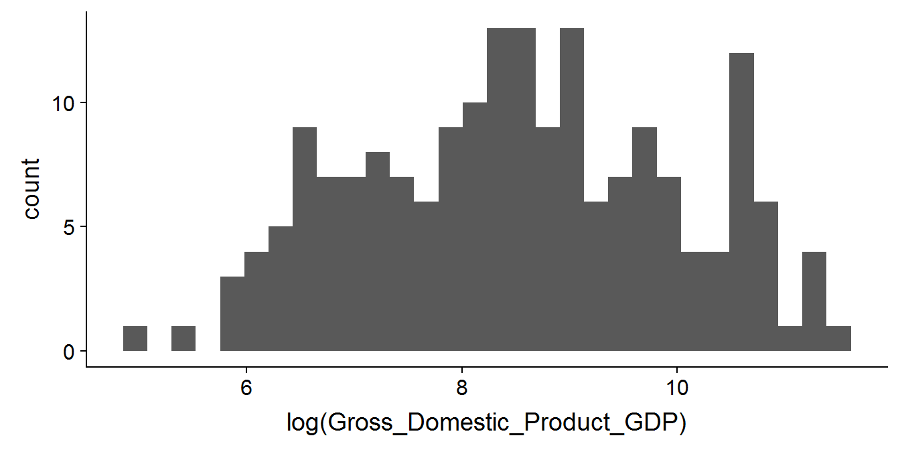
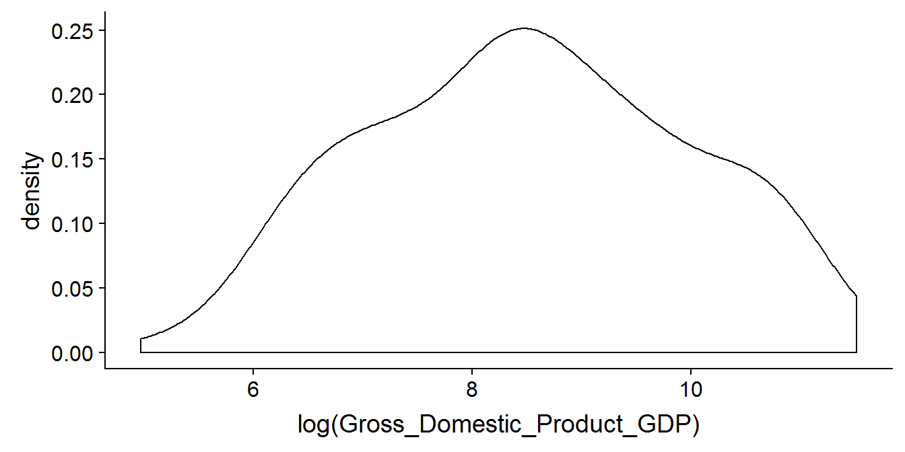

Chapitre 12 Créer des cartes avec ggplot2, tmap et Cartographie
12.1 Faire des cartes avec ggplot2
12.1.1 Les cartes choroplèthe
ggplot2 intègre une fonction geom permettant l’utilisation de données géomatrique : geom_sf
Le premier exemple que nous allons pouvoir voir, c’est une carte choroplèthe
data("World")
tt<-World %>%
rename(Country_or_Area_Code=iso_a3) %>%
inner_join(indicateur311 %>%
filter(Age_group=="All age ranges or no breakdown by age",
Sex=="Both sexes or no breakdown by sex",
Type_Zone=="Pays",
is.na(Value_type)) %>%
group_by(Country_or_Area_Code) %>%
filter(!is.na(Value)) %>%
filter(Year==max(Year)))## Joining, by = "Country_or_Area_Code"## Warning: Column `Country_or_Area_Code` joining factor and character vector,
## coercing into character vectorggplot(data=tt)+
geom_sf(aes(fill=Value))
On peut exploiter de la même façon les différents fonctions vue précédement. Par exemple avec un peu de thème et de facet.
data("World")
World<-st_as_sf(World)
tt<-World %>%
rename(Country_or_Area_Code=iso_a3) %>%
inner_join(indicateur311 %>%
filter(Age_group=="All age ranges or no breakdown by age",
Sex=="Both sexes or no breakdown by sex",
Type_Zone=="Pays",
is.na(Value_type)) %>%
group_by(Country_or_Area_Code) %>%
filter(!is.na(Value)) %>%
filter(Year %in% c(1990,2000,2010,2015)) %>%
ungroup() %>%
complete(Year)
)## Joining, by = "Country_or_Area_Code"ggplot(data=tt)+
geom_sf(aes(fill=log(Value)))+
theme_ipsum()+
scale_fill_viridis(option = "magma",
direction=1,
values=rescale(c(0,1,2,3,4,5,6,7)),
breaks=c(0,1,2,3,4,5,6,7))+
guides(colour=F,
order=0,
fill=guide_legend(direction="horizontal",
keyheight=unit(2,units="mm"),
keywidth=unit(20,units="mm"),
order=1,
title.position="top",
title.hjust=0.5,
nrow=1,
label.position="bottom",
label.hjust=1))+
theme(legend.position = "bottom")+
labs(fill="Log du taux de mortalité infantile")+
facet_wrap(~Year,drop=T)
12.1.2 Les cartes à ronds proportionnels
ggplot ne peut attribuer par défaut un rond proportionnel à un polygone. pour travailler sur des ronds proportionnels,il faut d’abord créer le centroid de nos zones et ensuite tracer un rond proportionnel avec geom_sf.
data("World")
World<-st_as_sf(World)
tt<-World %>%
rename(Country_or_Area_Code=iso_a3) %>%
inner_join(indicateur311 %>%
filter(Age_group=="All age ranges or no breakdown by age",
Sex=="Both sexes or no breakdown by sex",
Type_Zone=="Pays",
is.na(Value_type)) %>%
group_by(Country_or_Area_Code) %>%
filter(!is.na(Value)) %>%
filter(Year==max(Year)))## Joining, by = "Country_or_Area_Code"## Warning: Column `Country_or_Area_Code` joining factor and character vector,
## coercing into character vectorttc<-st_centroid(tt)## Warning in st_centroid.sf(tt): st_centroid assumes attributes are constant
## over geometries of xggplot(data=ttc)+
geom_sf(data=tt,fill="white")+
geom_sf(aes(color=Value,size=Value))
12.2 Les cartes avec Tmap
Tmap est un package dédié à la réalisation de carte sous R. La syntaxe est très proche de ggplot,avec l’opérateur “+” pour enchainer les options. L’équivalent des geom_xx() dans tmap sont les fonctions suivantes : tm_lines() : afficher des lignes tm_polygons() : afficher des polygones tm_raster() : afficher un raster tm_bubbles() : afficher des ronds proportionnels tm_markers() : afficher des marqueurs tm_text() : afficher du texte
Pour charger une donnée géométrique, il faut utiliser la fonction tm_shape()
Les différences : - Les variables s’appellent dans des cotes “”
Le facetting peut se faire sur un format de donées large (une carte par colonne et non une carte par modalité d’une variable)
La grande différence entre les tm_xx() et les geom_xx(), c’est que les tm_xx() inclus la définition des classes (nombre de classe, définition des classes et des palettes) sans passer par une fonction scale() qui dont l’équivaleur n’existe pas.
La mise en page se défini avec la fonction tm_layout(), la légende avec tm_legend()
12.2.1 Exemple de carte choroplèthe
tm_shape(tt %>% filter(Year==2015))+
tm_polygons("Value")
l’option n= permet de sélectionner le nombre de classes souhaitées lorsque l’on réalise une carte sur une variable continue
tm_shape(tt %>% filter(Year==2015))+
tm_polygons("Value",n=2)
12.2.2 Exemple de carte à ronds proportionnels
tm_shape(tt %>% filter(Year==2015))+
tm_polygons()+
tm_bubbles(size="Value",col="Value")
12.2.3 Exemples de cartes avec facet
tm_shape(tt)+
tm_polygons("Value")+
tm_facets("Year")
tm_shape(tt %>% filter(Year==2015))+
tm_polygons("Value")+
tm_facets("Continent")
12.2.4 gestion des palettes
la fonction tmaptools::palette_explorer() permet d’accéder à une interface très simple de définition d’une palette de couleur à partir des palette brewer.
tm_shape(tt %>% filter(Year==2015))+
tm_polygons("Value",palette=get_brewer_pal("OrRd", n = 5, contrast = c(0.2, 1)))
On peut également utiliser n’importe qu’elle palette, par exemple la pelette viridis, mais sans l’interface proposée par palette_explorer() :
tm_shape(tt %>% filter(Year==2015))+
tm_polygons("Value",palette=viridis(5, alpha = 1, begin = 0, end = 1, direction = 1, option = "D"))
12.2.5 La mise en page
tm_layout() permet de controler les polices, la légende, les marges, les couleurs. l’option design.mode=T permet de voir visuellement les marges,la position de la légende. Le titre de la légende ne se défini pas dans tm_layout() mais dans tm_polygons(). L’option title de ces fonctions est l’équivalent d’un libellé de la variable mise dans l’aesthetic.
tm_shape(tt %>% filter(Year==2015))+
tm_polygons("Value",palette=viridis(5, alpha = 1, begin = 0, end = 1, direction = 1, option = "D"),
title="Taux de mortalité de la mère \n(pour 100 000 naissances)")+
tm_layout(main.title="Taux de mortalité de la mère \n(pour 100 000 naissances)",
main.title.size=1.2,
outer.margins=c(0,0,0,0),
legend.position=c("left","bottom"),
legend.outside = F,
main.title.position = "center",
inner.margins = c(0, 0, 0, 0))
Avec les cartes en rond proportionnels,on peut spécifier un titre pour la couleur et la taille du rond.
tm_shape(tt %>% filter(Year==2015))+
tm_polygons()+
tm_bubbles(size="Value",col="Value",
palette=viridis(5, alpha = 1, begin = 0, end = 1, direction = 1, option = "D"),
title.col="",
title.size="Taux de mortalité de la mère \n(pour 100 000 naissances)")+
tm_layout(main.title="Taux de mortalité de la mère \n(pour 100 000 naissances)",
main.title.size=1.2,
outer.margins=c(0,0,0,0),
legend.position=c("left","bottom"),
legend.outside = F,
main.title.position = "center",
inner.margins = c(0, 0, 0, 0))
12.3 Exercice 5
Produire une carte du Loiret à l’EPCI du taux de logements collectifs dans le parc locatif social.
Résultat attendu
